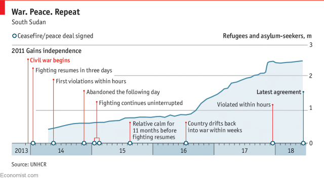
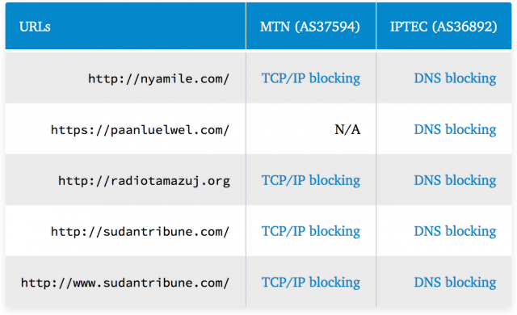
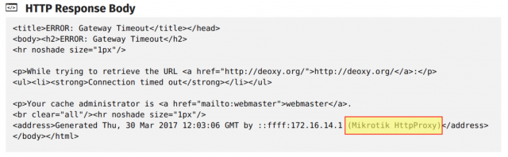

This post has been published by OONI, a censorship measurement project under the Tor Project, and South Sudan’s “The Advocates for Human Rights and Democracy” (TAHURID)
Background
South Sudan has been plagued by civil wars over the last century. The First Sudanese Civil War was a conflict from 1955 to 1972 between the northern part of Sudan and the southern Sudan region that demanded more autonomy. Following the first civil war, the Southern Sudan Autonomous Region was temporarily formed, but a second civil war erupted in 1983 and lasted until the end of 2004. After the second civil war, the Autonomous Government of Southern Sudan was created. South Sudan became an independent state on 9th July 2011, following a referendum.
The country though remains in turmoil. Two years after independence, a civil war erupted within South Sudan between the government and opposition forces. In 2015, an agreement to end South Sudan’s civil war was threatened by ceasefire violations and the war restarted by July 2016. South Sudan’s ongoing civil war has resulted in the displacement of millions (who have seeked refuge in neighbouring Uganda, Sudan, and Kenya) and in tens of thousands of deaths (though aid workers reported in 2016 that the true figure might be as high as 300,000 deaths, which is comparable to the number killed in Syria during five years of war).
At the end of May 2018, the Security Council of the United Nations renewed sanctions (previously imposed in 2015) on South Sudan for 45 days, setting a deadline for the civil war to end by 30th June 2018. Even though South Sudan’s main belligerents came to a peace agreement in late June 2018, experts worry that it fails to solve issues that have been at the heart of the civil war.

Amid conflict and political turbulence, South Sudan has one of the least developed telecommunications and internet systems in the world. Fifteen Internet Service Providers (ISPs) operate in South Sudan, but the lack of fibre-optic cables and the limited availability of public power hinder connectivity. MTN enjoys the greatest share within the mobile phone market, followed by Vivacell and Zain. Earlier this year however, Vivacell’s license was suspended for not paying USD 60 million in fees.
Internet penetration levels have increased since independence in 2011, but remain quite low. According to the National Communication Authority, around 20.5% of South Sudan’s population is estimated to have access to the internet, mostly concentrated in Juba and largely based on mobile internet subscriptions.
South Sudan’s Transitional Constitution of 2011 guarantees freedom of expression and press freedom under Article 24, with possible exceptions for public order, safety, or morality. The Article also calls on media to abide by professional ethics. Article 32 of the Transitional Constitution guarantees the right to access official information, with exemptions for public security and personal privacy. The regime though regularly violates media freedom protections in practice, and government officials have engaged in rhetoric that contributes to a hostile environment for the press.
Two media websites and two independent blogs were reportedly blocked in South Sudan in July 2017. The censored sites include Paris-backed Sudan Tribune and Dutch-backed Radio Tamazuj, as well as the Nyamilepedia and Paanluel Wel blogs of the Nuer and Dinka tribes, South Sudan’s two largest ethnic groups.

Measuring internet censorship
In an attempt to verify reports on the blocking of websites and to examine South Sudan’s internet landscape more broadly, OONI did some network measurement tests in South Sudan.
OONI Probe consists of a number of software tests that scan TCP, DNS, HTTP and TLS connections for signs of network tampering. Some tests request data over an unencrypted connection and compare against a known good value. Others check for HTTP transparent proxies, DNS spoofing, and network speed and performance.
To measure the blocking of websites, OONI started off by carrying out some research to identify South Sudanese URLs to test. They subsequently added these URLs to the Citizen Lab’s test list repository on GitHub, since OONI Probe is designed to measure the blocking of URLs included in these test lists. Over the last few months, OONI primarily ran OONI Probe’s Web Connectivity test (among other OONI Probe tests) in two networks: MTN South Sudan (AS37594) and IPTEC Limited (AS36892).
As part of their testing, they measured the blocking of URLs included in the global (including internationally relevant sites) and South Sudanese (including sites relevant to South Sudan) test lists. Once they collected OONI Probe network measurements from South Sudan,they analyzed them with the aim of identifying network anomalies that could serve as signs of internet censorship.
Blocked websites
Last year, media outlets Sudan Tribune and Radio Tamazuj, and independent blogs Nyamilepedia and Paanluel Wel, were reportedly blocked in July 2017. OONI recent testing not only corroborates these reports, but also suggests that these sites remain blocked one year later.
The following table links to network measurements pertaining to the recent testing of each of these sites across two ISPs:

OONI findings suggest that MTN (AS37594) blocks TCP/IP connections to these sites, while IPTEC (AS36892) blocks access by means of DNS tampering. It’s worth noting that both MTN and IPTEC block access to both http://sudantribune.com and http://www.sudantribune.com.
South Sudanese authorities blocked these sites for publishing “subversive content” and stated that the bans would not be lifted until those institutions “behaved well”. Sudan Tribune and Radio Tamazuj are foreign-based media outlets accused of hostile reporting against the government.
Paanluel Wel is a leading blog for the Dinka tribe, known for spearheading tribal political interests for the Dinka people and inciting hatred and violence against the Nuer people and other tribes. Nyamilepedia, on the other hand, is a leading blog for the Nuer tribe, known for promoting Nuer political interests and spearheading hatred against the Dinka and other Nuer who left the rebellion to join the Dinka-led government.
TAHURID reports that Almshaheer and South Africa’s Centre for Conflict Resolution are inaccessible on IPTEC, but accessible on MTN (the accessibility of which is also confirmed by OONI data testing almshaheer.com and ccr.org.za).
Many other URLs presented network anomalies (such as HTTP failures) as part of our testing, but such anomalies were most likely caused due to poor network performance and transient network failures. This suggests that South Sudanese internet users may encounter challenges in accessing sites in various points in time, even if they’re not intentionally being blocked.
It’s worth highlighting, however, that many of the URLs that OONI tested (including internationally popular and local sites) were found to be accessible in South Sudan during this study. These include sites related to conflict resolution and peacekeeping, such as the United Nations Mission in South Sudan (UNMISS) site.
HTTP proxy
Measurements previously collected in 2017 highlight the presence of an HTTP transparent proxy (Mikrotik).

This proxy is revealed in the HTTP response body in OONI Probe measurements (linked below) pertaining to the testing of the following sites:
http://deoxy.org http://dextroverse.org http://warc.jalb.de http://www.bloglines.com http://www.foreignword.com http://www.gamenode.com http://www.interactworldwide.org http://www.iwantim.com http://www.kazaa.com http://www.kcna.kp http://www.law-lib.utoronto.ca/Diana/ http://www.pornhub.com http://www.proxyweb.net http://www.wzo.org.il
These measurements clearly show that the Mikrotik HTTP transparent proxy was present last year in the network path to the above sites through South Sudan’s 4G Telecom (AS327786) network. It remains unclear though if this proxy is still in use, since measurements haven’t been collected from this network in recent months.
It’s worth noting that this equipment may potentially be used for implementing internet censorship and/or for caching (the Mikrotik HTTP proxy has this feature) to improve connectivity. Given though that most of these sites were accessible (and the ones that weren’t presented different errors, sometimes triggered as part of anti-DDoS protection), it may be the case that this proxy was primarily deployed for improving connectivity and network performance.
Conclusion
South Sudan is a young nation in politically turbulent times. Within the context of conflict, local experts discuss the challenges of drawing a line between freedom of expression and hate speech, which spurs violence.
Internet censorship does not appear to be pervasive, but limited to sites that authorities deem to publish “subversive content” and incite violence. This is evident through the blocking of Nyamilepedia and Paanluel Wel, the leading blogs of the Nuer and Dinka tribes who are known to incite violence. OONI data also corroborates the blocking of media outlets Sudan Tribune and Radio Tamazuj, both of which are hosted outside of South Sudan. Local journalists and media organizations though face different (non-digital) forms of censorship.
Juba Monitor, for example, is an independent South Sudanese newspaper critical of the government. Their website was found to be accessible, but their editor was jailed in 2016 as a result of his reporting and the newspaper has been ordered to cease its publishing over reports that the government considered “against the system”. Security personnel has been deployed at the printing press, forcing journalists to remove or edit articles critical of the government and its officials prior to publication.
Self-censorship might be one of the most effective forms of censorship in South Sudan, as suggested by the reported intimidation and killing of journalists. Local experts argue that the media in South Sudan operate in a state of fear. Earlier this year, even UN-backed Radio Miraya was suspended on the grounds of not having acquired a broadcasting license.
Nonetheless, the fact that South Sudan has already started implementing internet censorship raises questions as to whether its internet censorship apparatus will expand as internet penetration levels increase and political events unfold. Further research and testing is therefore required to better understand the country’s internet landscape and monitor any new censorship events.
Comments on this site are closed. The comments below were published while the previous WordPress site was running and are kept as an archive. To ask a question or discuss TorBox, please use GitHub Discussions (radio24/TorBox).